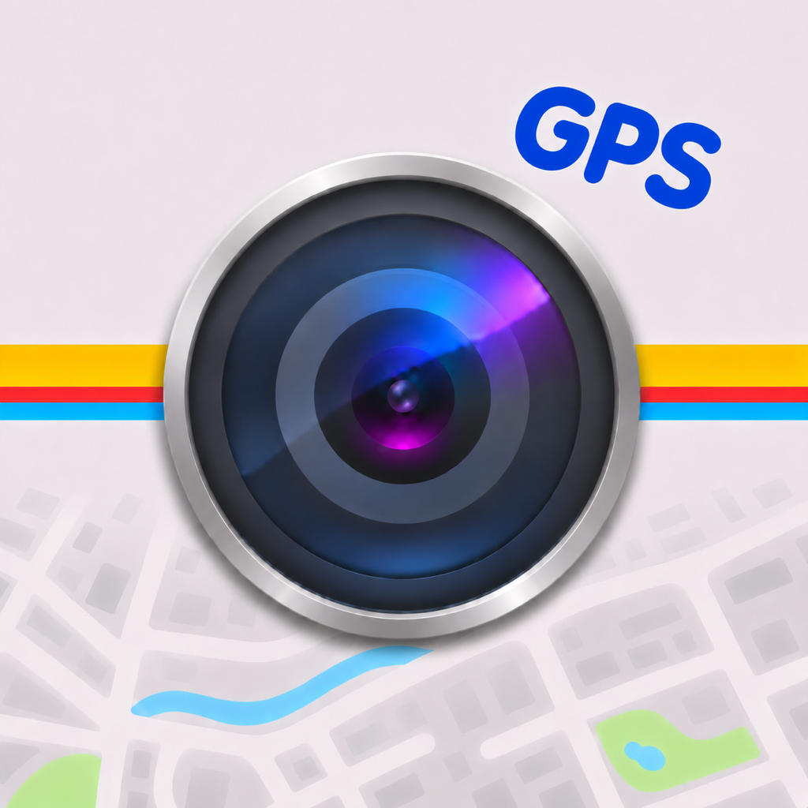

ANDROIDAPP SPACES
MultiSpace
Keep personal, work, and other app activity separate with flexible spaces for the apps you use every day.
- Separate app spaces
- Personal and work organization
- Android utility
ANDROID & IOS UTILITY APPS
CODING APPLICATION creates focused mobile tools for the moments that benefit from a little more clarity: separate app spaces, digital cleanup, audio editing, and timestamped camera records.
APP DIRECTORY
Choose the app that matches the task. Each product page explains the workflow, available features, and privacy details before you download or connect anything.
Keep personal, work, and other app activity separate with flexible spaces for the apps you use every day.
Review photos and videos, compress large media, and optimize available iPhone memory with actions you confirm.
Edit sound on iPhone with precise trimming, joining, mixing, recording, format conversion, and compression tools.

Create clear camera records with date, time, GPS location, and custom notes for attendance and on-site work.
WHY CODING APPLICATION
We build small, understandable tools around real tasks. The interface stays focused, permissions have a purpose, and important decisions remain visible to the person using the app.
Each product has a clear job, from editing a recording to creating a reliable check-in record.
Review what an app is about to change, then decide what to keep, remove, export, or share.
Product pages explain permissions, data use, and subscription details in language people can understand.
COMMON QUESTIONS
Start with the task you need to complete, then open the product page for the full feature and privacy information.
MultiSpace helps organize different parts of your digital life into separate app spaces on Android.
AI Cleanup helps review photos and videos, compress large media, optimize available memory, and confirm the changes you want to make.
Audio Editor includes trimming, joining, mixing, recording, conversion, and compression tools.
Timestamp Camera Basic+ is designed for attendance, duty shifts, and on-site check-in records.